sameSpot
Eine App, bei der lokale Verbindung als Nebenprodukt entsteht, nicht als Ziel: für Menschen, die sich Nähe wünschen, aber von klassischen Sozial-Apps abgeschreckt werden.
Leitgedanke: Würde meine Persona sie nutzen, selbst wenn sie wüsste, dass sie nie jemanden trifft?
Der Loop, in drei Schritten.
Eine Aufgabe an einem Ort, ein passives Wiedersehen, ein Austausch nur bei beidseitigem Wollen.
Walkthrough ansehen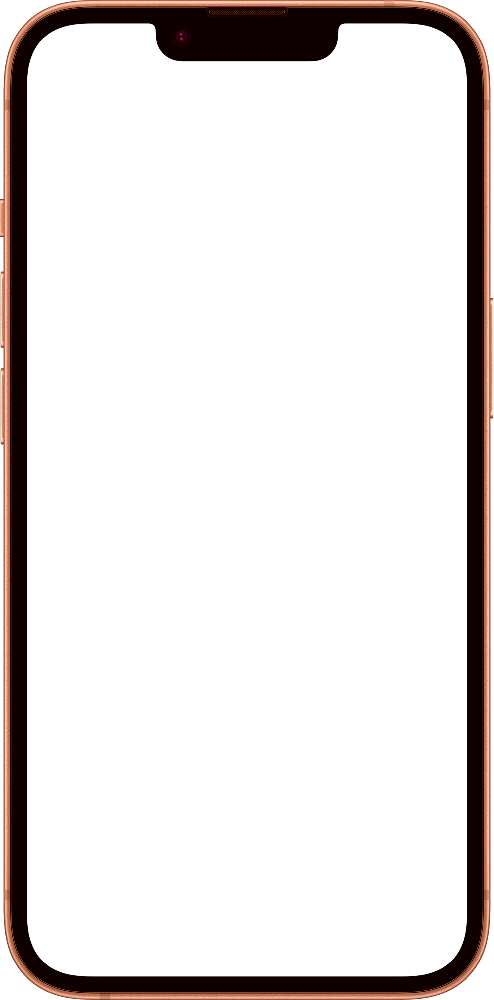
Die App gibt eine kleine Aufgabe an einem konkreten Ort. Man geht hin, weil die Aufgabe reizt und nicht, um jemanden zu treffen.
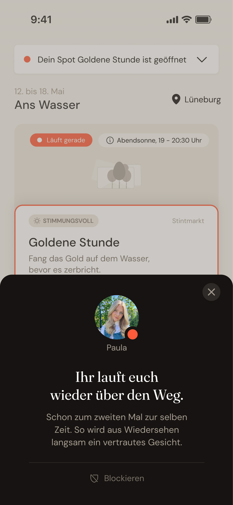
War jemand am selben Ort, erscheint das später im Feed. Passiv, ohne Namen, ohne Anschreiben: niemand muss den ersten Schritt machen.
Erst wenn beide wollen, entsteht Kontakt: ein Code, den man teilt. Verbindung als Nebenprodukt, nicht als Ziel.
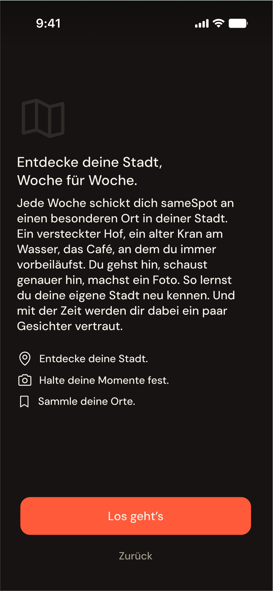
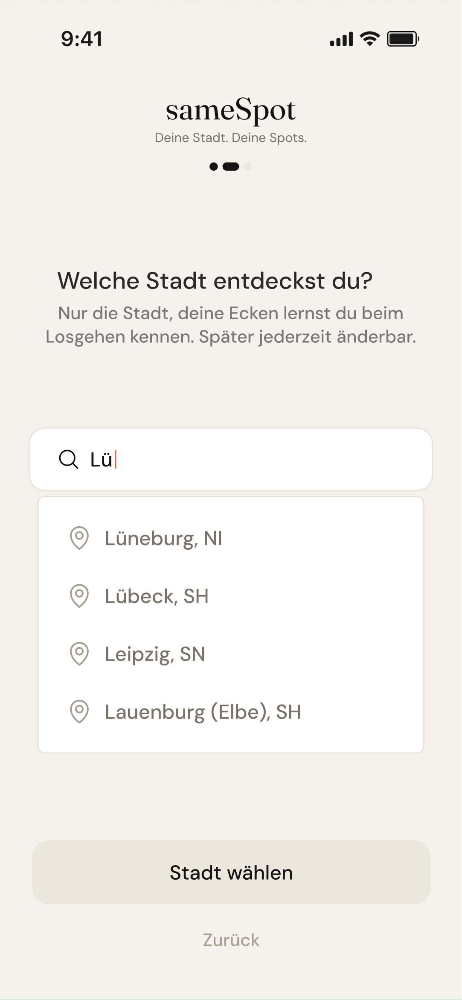
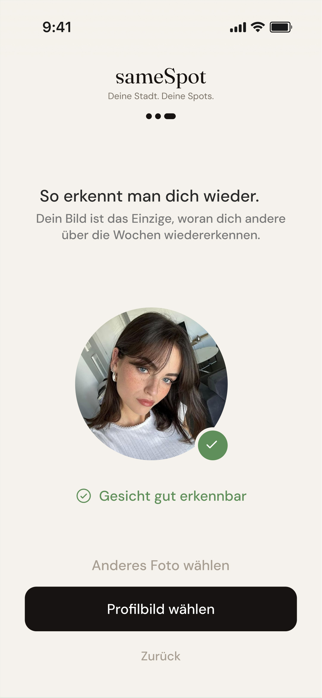
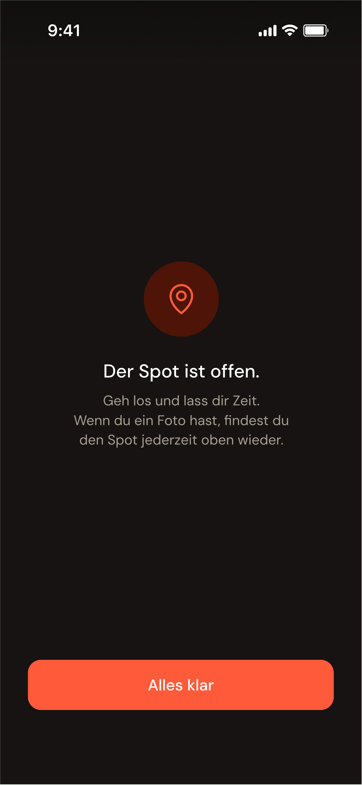
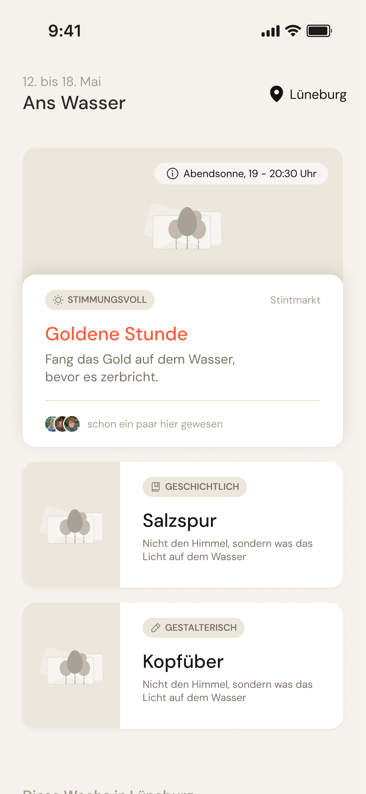
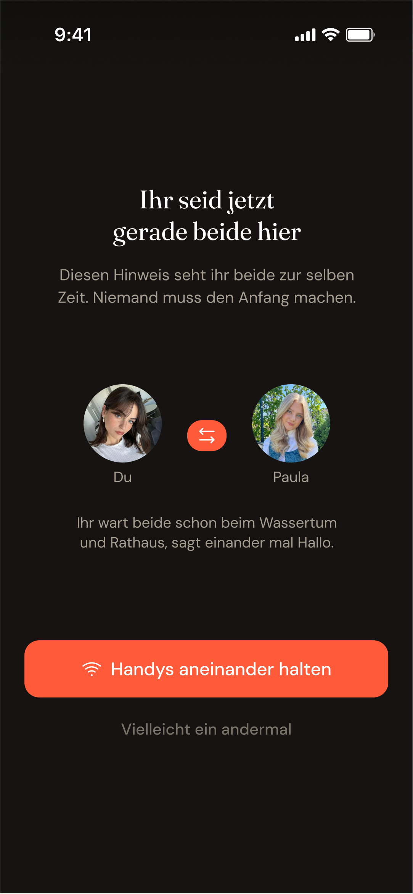
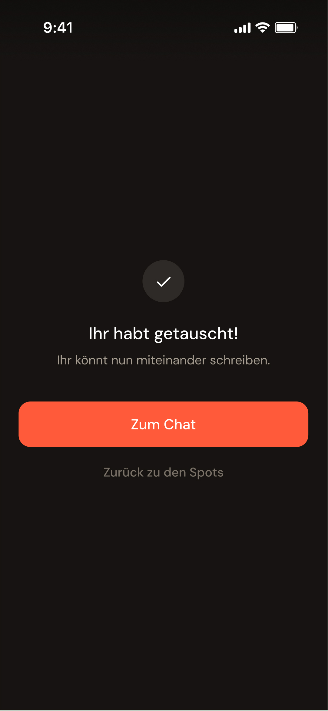
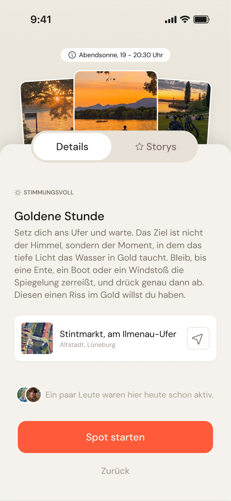
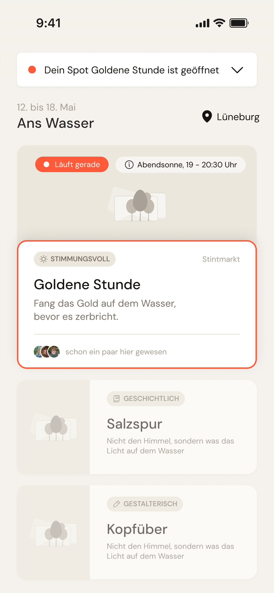
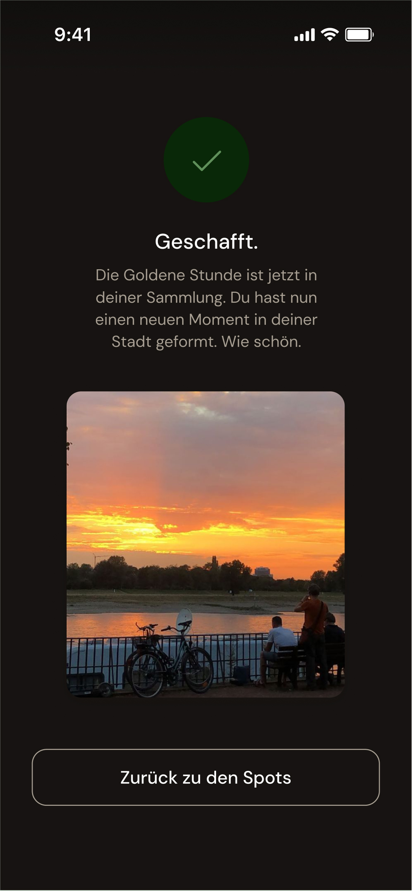
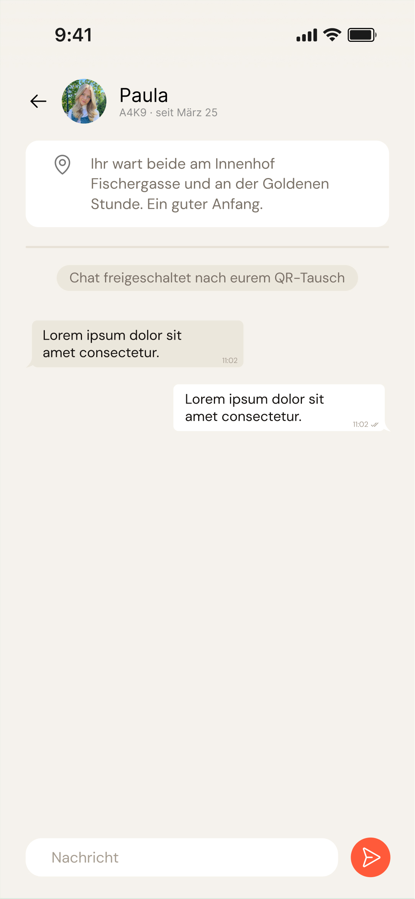
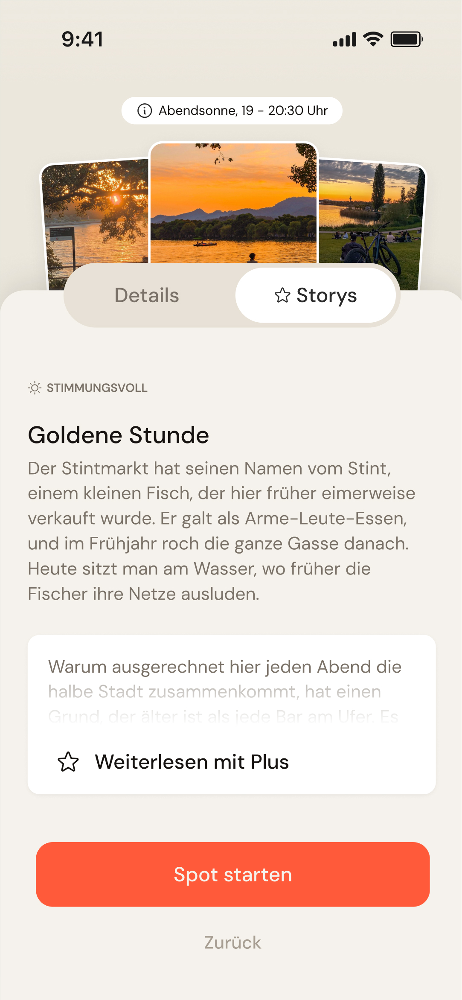
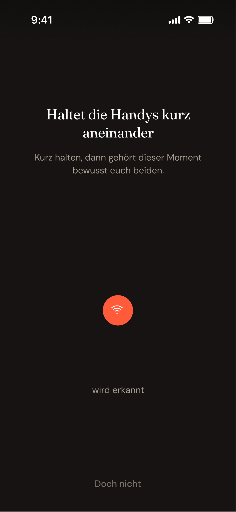
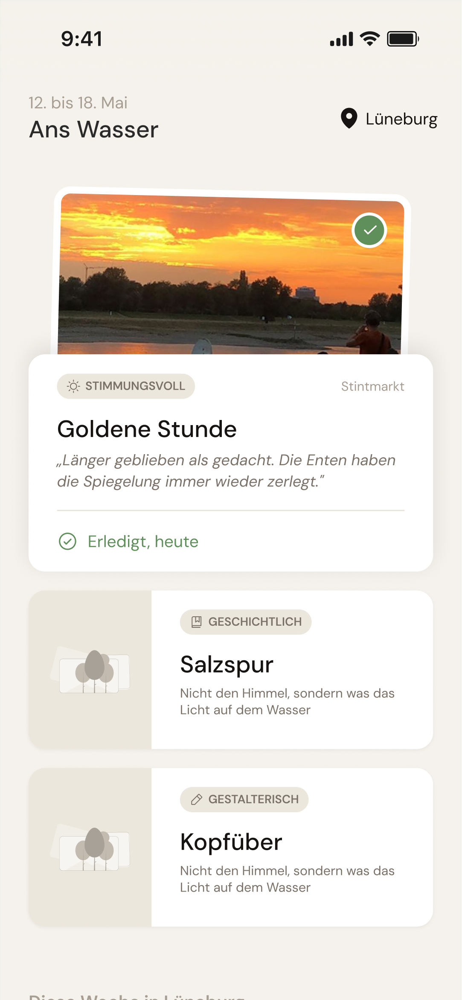
„Ich würde ja gerne, aber nicht so.“
Warum lernen sich Menschen, die sich täglich sehen, nie kennen?
Ich hatte eine bequeme Antwort im Kopf: keine Zeit, kein Interesse, alle sind mit sich beschäftigt. 52 Antworten und vier Interviews später war klar, dass keine davon stimmt.
Der Wunsch ist da. Er ist sogar größer als die Zufriedenheit mit dem eigenen Umfeld.
Verbundenheit mit dem Ort und Verbundenheit mit Menschen sind zwei verschiedene Dinge. Das war die erste echte Überraschung.
Eine von 52 Personen hat je jemanden Neues angesprochen.
Ich bin wohl einfach zu schüchtern dafür und kann nicht über meinen Schatten springen.Interviewperson 2 · Kernzielgruppe
Auffällig war nicht das Zögern, sondern die Selbstzuschreibung: Alle vier Interviewten suchten den Grund bei sich, keiner in der Situation.
Es fehlt nicht an Gelegenheiten und nicht an Interesse. Es fehlt an einer Situation, in der niemand den ersten Schritt machen muss.
Drei Motive, und darunter immer dieselbe Ursache.
Ich habe die Aussagen so lange sortiert, bis sich Gruppen gebildet haben. Drei blieben übrig. Sie klingen unterschiedlich, laufen aber auf denselben Punkt hinaus.
Passives Warten
71 % der AntwortenDer Wunsch existiert, aber immer als Erwartung an jemand anderen. Niemand beschreibt sich selbst als die Person, die anfängt.
Ablehnung vorweggenommen
in allen 4 InterviewsDie Absage wird durchgespielt, bevor überhaupt etwas passiert ist. Bewertet wird ein Risiko, das nie eingetreten ist.
Selbstzuschreibung
1 von 52 hat es je versuchtDer Grund wird bei sich selbst gesucht, nie in der Situation. Damit wird aus einer Hürde ein Charakterzug, und der lässt sich nicht ändern.
Alle drei setzen voraus, dass jemand den ersten Schritt sichtbar macht. Keins davon löst sich mit besserer Suche oder mehr Profilen: sie verschwinden erst, wenn der erste Schritt niemandem zugeordnet wird.
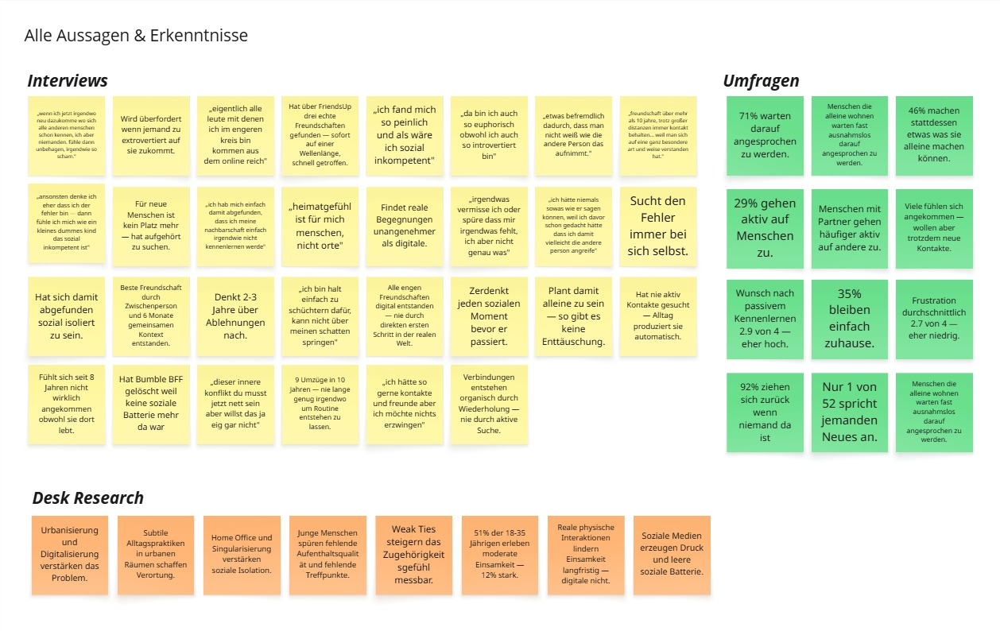
samespot/clustering.jpg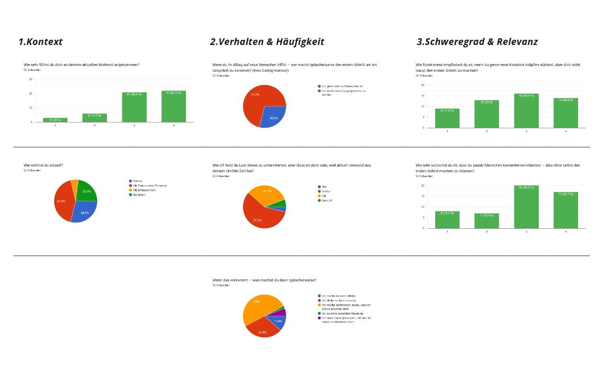
samespot/umfrage.jpgHanna ist keine Annahme, sondern eine Verdichtung.
Vier Interviews und 52 Umfrage-Antworten in einer Person. Sie merkt das Problem in den kleinen, unverabredeten Momenten, nicht abends in einer App.
Ich sehe die gleichen Leute jeden Tag. Und trotzdem ist es, als wären wir uns nie begegnet.Verdichtet aus Interview 1, 2 und 4
- Verbindung ohne Druck
- dass sich ihr Leben wieder echter anfühlt
- Menschen, die sowieso da sind
- zerdenkt Momente, bevor sie passieren
- rechnet mit Ablehnung
- sucht den Fehler bei sich selbst
Hanna darf nicht diejenige sein müssen, die anfängt.
Vier Apps im Detail. Und eine leere Ecke gefunden.
Vier Apps, die Teile meiner Idee schon können: Bumble BFF (Kontakt ohne Dating-Druck), Meetup (gemeinsamer Anlass), nebenan.de (Nachbarschaft) und Pokémon GO (Orte als Spielfeld). Sortiert nach Ortsbindung und danach, wie viel Eigeninitiative der erste Kontakt kostet.
Ortsbezug ist überall nur ein Filter, nie der Anlass.
Wiederholung nutzt keine der vier als Signal: Pokémon GO bindet Orte, aber keine Menschen.
Die leere Ecke ist kein Zufall: ortsgebunden und passiv verlangt eine andere Mechanik.
Also habe ich das Ansprechen weggenommen.
Drei Wege waren möglich, zwei habe ich verworfen.
Alle drei traten mit vergleichbarem Aufwand und vergleichbarer Relevanz an, die Bewertung allein entschied also nichts. Ausschlaggebend war das Kriterium aus Kapitel 01: Verbindung darf keinen aktiven ersten Schritt verlangen.
Wöchentliches Stadtspiel
Ortsgebundene Rätsel und Challenges, die Hanna wöchentlich an reale Orte in der Stadt schicken. Verbindung zu anderen entsteht nur, wenn beide es aktiv wollen.
Stille Stadtkarte
Eine Karte, die sich durch Hannas eigene Alltagsorte füllt und still zeigt, wo andere regelmäßig sind, ganz ohne Profile, Namen oder Feed.
Alltagsaufgaben mit passivem Feed
Wöchentliche Alltagsaufgaben. Verbindung entsteht als Nebenprodukt durch geteilte Orte und einen passiven Feed, nicht durch aktives Suchen.
Aus der gewählten Option wurden drei Schritte.
Kein Profil, kein Wischen, keine erste Nachricht. Was in der Option noch eine Idee war, ist hier der Mechanismus, an dem alles Weitere hängt.
Aufgabe an einem Ort
Eine kleine Alltagsaufgabe schickt Hanna an einen realen Spot. Sie geht hin wegen der Aufgabe, nicht wegen der Menschen.
Wiedersehen im Feed
Wer dreimal am selben Spot war, taucht passiv im Feed auf. Keine Benachrichtigung, keine Aufforderung, kein Ranking.
Code-Austausch
Erst wenn beide Seiten wollen, wird ein Code getauscht. Das ist der einzige Weg zu Kontakt.
- Spot-Detail
- Aufgabe starten
- Code-Exchange
- Feed
- Beitrag
- Wiedersehen
- Begegnungen
- Chat
- Meine Spots
- Einstellungen
- Sichtbarkeit
Was auf jeder Stufe dazukam und was wieder rausflog.
Die Aufgabenübersicht ist der Screen, der den Loop tragen muss. Deshalb habe ich ihn dreimal neu gebaut, bevor er in den Test ging.
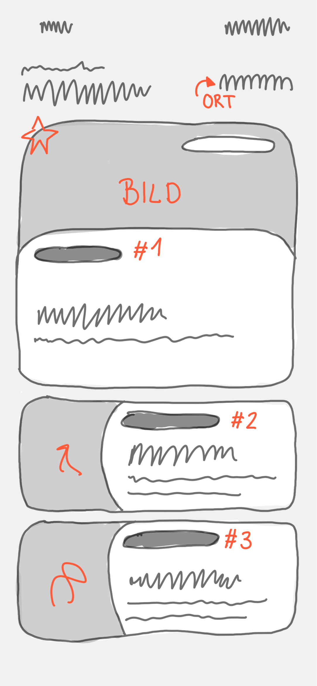
Zwei Tage nur die Frage: welcher Screen trägt den Loop? Sieben Varianten der Aufgabenübersicht, sechs verworfen.
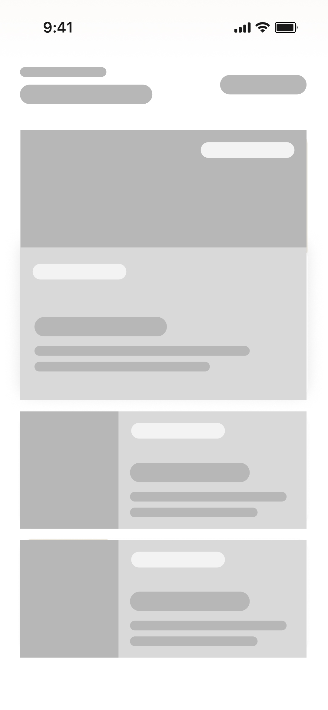
Vier Bereiche, eine Ebene tief. Hier ist der Feed vom Profil weggezogen, damit Wiedersehen nicht wie eine Benachrichtigung wirkt.
Hannas kompletter Weg von der Aufgabe bis zum Code, klickbar. Mit dieser Version bin ich in die Testsitzungen gegangen.
Was ich bewusst weggelassen habe.
Der Kern-Loop musste ohne Beiwerk funktionieren. Alles, was ihn erklärt oder monetarisiert hätte, ist für diese Version rausgeflogen.
Kein Matching-Algorithmus
Die Wiederholung am Ort ist das Signal. Ein Score hätte genau das ersetzt, was die App besonders macht.
Premium raus aus dem Kernflow
Im Test hat jede Bezahl-Schwelle den Loop unterbrochen, bevor er verstanden wurde.
Kein Chat-Ausbau
Der Code-Austausch ist eine „Sidequest“ innerhalb der Aufgabe, kein Abschluss. Die Aufgabe selbst beendet man weiterhin manuell. Was danach im Chat passiert, war nicht mehr Teil des Scopes.
Im Gespräch verstanden, im Interface nicht.
Beide Testpersonen haben das Konzept im Gespräch verstanden und im Interface nicht wiedererkannt. Getestet habe ich nicht die Idee, sondern ob sie ohne meine Erklärung trägt. Sie trug nicht.
Drei Beobachtungen, und was ich daraus geschlossen habe.
Links steht, was die Testpersonen getan und gesagt haben. Rechts, was ich daraus gemacht habe. Die Trennung ist Absicht: das eine ist beobachtet, das andere ist meine Deutung.
Warum sehe ich ständig die gleiche Person? Würde die blockieren wollen.
Beide Testpersonen lasen „Du warst schon 3x am selben Ort wie Mara“ als Meldung über eine fremde Person, nicht über sich selbst. Eine wollte die Funktion sofort abschalten.
Der Satz stellt die Beobachtung in den Vordergrund statt den gemeinsamen Ort. Damit fiel die Mechanik in genau die Kategorie zurück, aus der sie herauswollte: etwas, das mit einem passiert.
gelöst in Kapitel 04: gemeinsamer Ort als GesprächseinstiegNach dem Onboarding scrollten beide durch die Aufgabenübersicht, ohne etwas anzutippen. Eine fragte, was sie jetzt tun solle.
Die Übersicht zeigte drei gleichwertige Aufgaben und keinen ersten Schritt. Ohne sichtbaren Einstieg beginnt der Loop nicht, und ohne Loop trägt das ganze Konzept nicht.
gelöst in Kapitel 04: eine Aufgabe führt, mit klarem EinstiegBeide suchten Chat und Begegnungen in der unteren Navigation. Dort lagen sie nicht, sie lagen im Profil. Gefunden hat sie keine der beiden.
Was nicht in der Hauptnavigation steht, existiert im Test nicht. Ich hatte den Austausch als Nebenfunktion einsortiert, obwohl er das Ziel des Loops ist.
gelöst in Kapitel 04: eigener Bereich in der Tab-BarAlle drei Findings hatten dieselbe Ursache.
Ich war überzeugt, das Wiedersehen sei der Wow-Moment. Es war das größte Risiko.
Der Fehler lag nicht im Detail, sondern in meiner Annahme: Ich hatte den Moment gebaut, den ich mir gewünscht habe, und nicht den, den jemand ohne meine Erklärung versteht. Erst als ich den Ablauf im Gespräch erzählt habe, nickten beide.
Grenze dieser Erkenntnis: zwei Personen zeigen Verständnisprobleme, keine Verhaltensmuster.
Kein aufpolierter Mid-Fi, sondern ein zweiter Entwurf.
Der Test hat nicht die Mechanik widerlegt, sondern die Ebene darüber: Reihenfolge, Benennung, Navigation, Tonfall. Genau die Dinge, die ein Interface ausmachen. Wenn alle drei Findings dieselbe Ursache haben, reicht kein Nachbessern an einzelnen Stellen.
Deshalb ist die finale Version kein aufpolierter Mid-Fi, sondern ein zweiter Entwurf auf derselben Mechanik. Der Loop aus Kapitel 02 ist unverändert geblieben, alles, was ihn erzählt, ist neu.
Nicht alles Gefundene war gleich wichtig.
Aus dem Test kamen mehr Findings als Zeit. Ich habe sie danach sortiert, ob sie den Kern-Loop blockieren oder ihn nur bequemer machen. Nur die erste Gruppe habe ich umgesetzt.
- Wiedersehen positiv framen
- Shared Spots als gemeinsamer Bezugspunkt eingeführt
- Austausch in die Hauptnavigation
- Ortsbezug der Aufgabe klarer machen
- Begegnungs-Kennzahl schärfen
- Streak-Bedeutung erklären
- Code-Austausch angenehmer gestalten
- Entdecken-Bereich weiter vereinfachen
Ich habe nicht die Mechanik geändert, sondern ihre Erzählung.
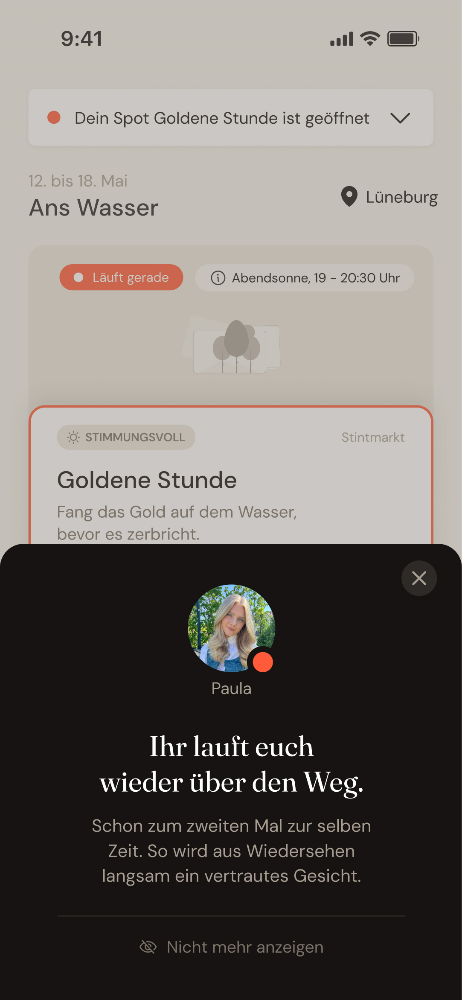
„Ihr lauft euch wieder über den Weg.“
Noch beiläufig: ein Hinweis von unten, keine Aufforderung.
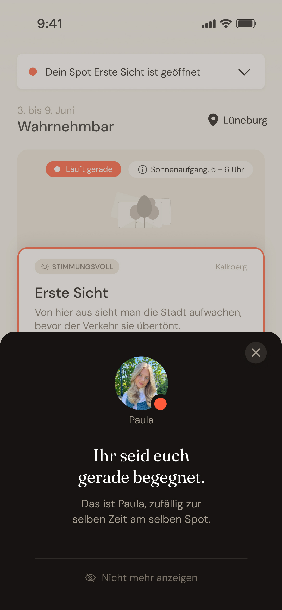
„Ihr seid euch gerade begegnet.“
Der Hinweis wird direkter: Name und Ort sind jetzt sichtbar.
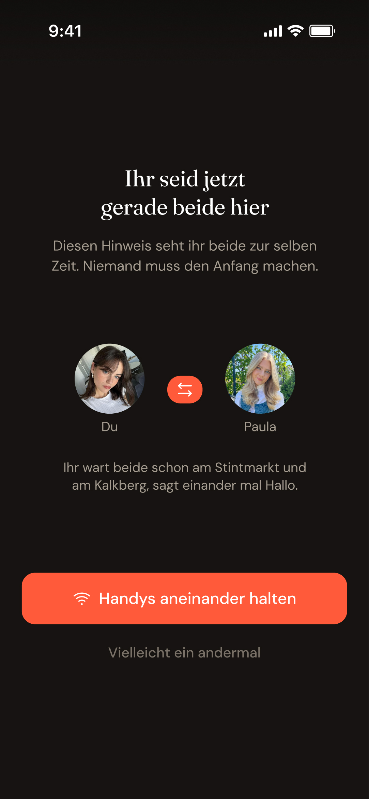
„Ihr seid jetzt gerade beide hier.“
Vollflächig und dunkel: der einzige Moment, der einen echten Schritt verlangt.
der Nutzer:innen, die eine Wiederbegegnung sehen, starten einen Code-Austausch. Daran würde ich messen, ob der Kernmechanismus trägt, wöchentlich, verantwortet von UX, UI und Dev.
Eine App, die Orte kennt, muss sich das verdienen.
Das „creepy" aus dem Test war kein Copy-Problem, sondern eine berechtigte Frage nach Kontrolle. Drei Regeln stehen deshalb über der Mechanik.
Der Code ist die Grenze
Ohne Austausch kein Kontakt. Es gibt keinen Weg, jemanden ungefragt anzuschreiben.
Blockieren und Ausblenden
Wer eine Person nicht mehr sehen möchte, blendet sie einfach aus. Still, ohne Erklärung, ohne dass die andere Person etwas davon merkt.
Geschlechtsfilter, opt-in
Vorab einschaltbar, damit zum Beispiel Frauen aus Sicherheitsgründen gar nicht erst Männer in ihren Begegnungen sehen, wenn sie das nicht wollen.
Ein kleines System, damit 16 Screens zusammengehören.
Vier Farben, zwei Schriften, eine Handvoll Bausteine. Der Umfang ist kein Understatement, sondern Konsequenz aus dem Test: Wenn drei Findings dieselbe Ursache haben, braucht es keine Vielfalt, sondern Wiederholung.
FarbeIhr wart beide schon hier.
Kaffee an einem Ort, an dem du noch nie warst
Aufgaben laufen 24 Stunden. Wer sie abschließt, taucht am Ort auf, nicht im Feed.
Noch 6 Stunden · 3 Personen waren hier
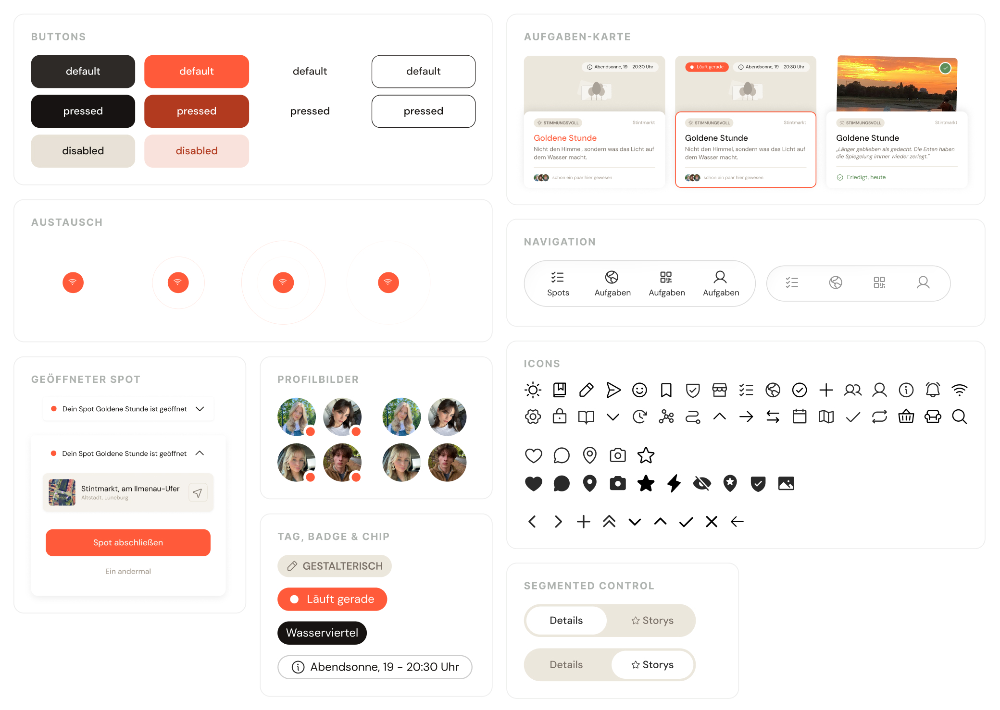
Wie ich mit KI gearbeitet habe, und wo nicht.
KI war kein Werkzeug für den Entwurf, sondern für alles davor und daneben. Sie hat mir Zeit für Testen und Zeichnen verschafft.
Kein Screen und kein Icon ist generiert, alle 16 Screens sind in Figma gebaut. Interviews, Usability-Test und Priorisierung kamen von mir, nicht aus einem Prompt.
Nicht beschrieben, sondern nachprüfbar.
Ich gehe einmal durch die App und erkläre, warum sie so aufgebaut ist.
Wie die Datei wirklich aussieht, Verlinkungen inklusive.
 samespot/figma-prototyp.png
samespot/figma-prototyp.png
 samespot/figma-komponenten.png
samespot/figma-komponenten.png
 samespot/figma-flow.png
samespot/figma-flow.png
Was ich beim nächsten Mal anders mache.
- Ich würde schon mit dem Low-Fi-Prototyp testen, nicht erst ab Mid-Fi.
- Sicherheit war für mich anfangs kein eigenständiges Thema, sondern in der Mechanik mitgedacht. Erst die Feedback-Schleifen haben gezeigt, dass es eigene Antworten braucht: was, wenn jemand eine Person nicht mehr sehen möchte, oder ein Geschlecht komplett ausschließen will? Daraus sind die Sicherheitsregeln entstanden, das Blockieren/Ausblenden und der Geschlechtsfilter.
Was diese Case Study nicht beweist.
Drei Grenzen, unter denen dieses Projekt entstanden ist. Jede hat etwas gekostet, und jede hat etwas erzwungen, das sonst nicht passiert wäre.
Allein gearbeitet, ohne Entwicklung
Die Mechanik, um die sich alles dreht, ist im Prototyp simuliert. Es gibt kein echtes Standort-Tracking, also auch keinen Test unter realen Bedingungen. Ob Menschen tatsächlich hingehen, weiß ich schlicht nicht.
Was es dem Ergebnis gebracht hatWeil nichts messbar war, musste jede Entscheidung begründet sein statt belegt. Das hat die Argumentation härter gemacht, als eine Kennzahl es getan hätte.
Nur zwei Testpersonen
Zwei Personen sind keine Stichprobe. Gefunden habe ich Verständnisprobleme, keine Verhaltensmuster. Jede Prozentzahl, die ich daraus ableiten würde, wäre erfunden.
Was es dem Ergebnis gebracht hatZwei Personen haben gereicht, um den Kernfehler zu finden, und zwar früh. Hätte ich auf eine große Runde am Ende gewartet, wäre der Rückschlag zu spät gekommen, um noch etwas zu ändern.
Keine echten Nutzungsdaten
Es gibt keinen Beleg dafür, dass der Loop trägt. Der KPI ist eine Behauptung mit Zielwert, kein Ergebnis, und als solcher hier auch gekennzeichnet.
Was es dem Ergebnis gebracht hatEr ist so formuliert, dass er das Konzept widerlegen kann. Damit ist das Projekt überprüfbar statt schöngerechnet.
Bewiesen habe ich hier nichts. Ich kann nur begründen, warum ich es so gebaut habe, und sagen, was fehlt, um es zu prüfen.